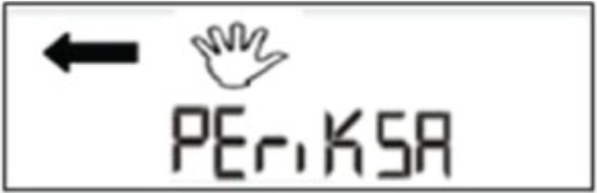

PERMASALAHAN TERKAIT APP PRABAYAR 1 FASA
Pada kasus kasus tertentu ada temuan Tulisan di Layar APP diantaranya adalah
Relay Rusak
Display TRIPTEST bisa muncul di Merk kwh meter ITRON. Pada Merk ini setiap pengujian relay 01 Enter akan selalu muncul tulisan TRIPTEST, namun tidak semua triptest ini menandakan kerusakan relay. Pada saat kwh meter posisi Periksa ataupun sisa credit token habis, kwh meter merk ITRON ini tidak akan bisa melakukan test relay. Merk ITRON dalam melakukan pengujian relay akan berfungsi jika posisi kwh normal, tidak periksa dan ada sisa credit token. Jika kondisi kwh meter normal, tidak periksa dan masih ada credit token namun 01 enter tidak bekerja, pastikan dahulu tegangan tidak drop (41 enter), pastikan mcb kwh meter ataupun mcb sekering rumah dalam kondisi baik.
SOLUSI Hubungi Petugas PLN Melalui Aplikasi PLN Mobile/ (Kode Area) 123
Muncul Gambar Tangan Pada layar APP
Gambar tangan muncul di Layar APP diantaranya disebabkan oleh :
- Ada grounding yang bergabung dengan Nol Instalasi baik di Box sekring maupun pada Stop Kontak.
- Netral keluaran Instalasi bergabung dengan Instalasi rumah di sebelahnya.
- Ada Pencurian Listrik pada meter Prabayar (sirkuit Arus di hubung Singkat).
- Ada Injeksi Arus pada Kawat Fasa atau Netral.
- Netral pengeluaran KWH Meter di putus, dan Netralnya menggunakan Grounding.
- Kawat Netral di putus dan dipasang alat pengatur tegangan di Pelanggan.
- Ada induksi Medan Magnet terhadap KWH Meter Prabayar.
SOLUSI apabila ditemukan APP dengan kejadian ini adalah sebagai berikut :
- Siapkan Tang Ampere.
- MCB di bawah KWH Meter di OFF kan.
- Cek 44 Enter, apakah ada arus bocor?
- Kalau ada Nilai, Buka Box Zikring Pelanggan, cari dengan Tang Ampere kebocoran Arus yang nilainya sama dengan hasil dari 44 Enter.
- Kalau sudah ketemu, lepaskan kabel yang menyebabkan ada kebocoran Arus.
- Cek lagi 44 Enter, kalau sudah Nol nilainya, maka kebocoran Arus sudah hilang.
- Apabila masih timbul Tulisan Periksa, maka masukkan Clear Tamper dari Vending Unit setempat.
Saran :
Apabila melakukan pemasangan atau perbaikan Instalasi, harus menggunakan Instalatir yang Sah yang terdaftar di PLN, supaya tidak timbul masalah seperti ini.
Daya Lebih
Daya lebih ini muncul karena pemakaian pelanggan yang melebihi daya kontrak,
SOLUSI mengurangi beban pemakaian pelanggan atau menyarankan pelanggan untuk melakukan perubahan daya.
Terputus
Terputus ini disebabkan oleh pelanggan sudah Trip 5 kali akibat kelebihan pemakaian, dan pelanggan tidak mengurangi pemakaian saat terjadi daya lebih,
SOLUSI Kurangi Pemakaian listrik, tunggu 45 Menit, listrik akan menyala kembali.
Rusak
Layar APP yang tertera RUSAK harus segera dilakukan penggantian APP.
Salah satu penyebab muncul display RUSAK diantaranya selain kegagalan komponen, indikasi lain adalah karena dibukanya atau kendornya baut cover utama kwh meter yang ditunjukkan oleh nomor 1 dan nomor 2.
SOLUSI Hubungi Petugas PLN Melalui Aplikasi PLN Mobile/ (Kode Area) 123.
Panah Terbaik
Penyebab Panah Terbalik
Apabila ada arah Arus Terbalik pada Meter Prabayar, maka Di LCD Meter Prabayar timbul Gambar Panah Terbaik, Setelah 1 menit timbul Panah Terbalik, maka akan muncul Gambar Tangan dan Periksa
Ini biasanya diakibatkan adanya Grounding yang bergabung dengan Netral di Instalasi Pelanggan, sehingga Arus yang diakibatkan oleh Ketidakseimbangan beban yang ada di jaringan Liastrik akan mengalir ke titik Grounding yang pemasangan nya salah.
SOLUSI pisahkan Grounding yg bergabung dengan Netral di Instalasi Pelanggan.
DISPLAY ERROR
ERR-01 02 dan 03 hanya terjadi pada salah satu kwh meter Merk Hexing,
Err 1 = Relay Fasa mengalami kerusakan (Tipe HXE 120)
Err 1 = Relay Fasa mengalami kerusakan (Tipe HXE 120)
Err 3 = Relay Fasa/Netral mengalami kerusakan (Tipe HXE 116)
Pada APP yang muncul ERR juga kwh rusak, diantaranya adalah ERR-23, ERR-27. Gangguan seperti ini sering terjadi pada kwh meter Merk Melcoinda. Segera laporkan ke PLN terdekat jika muncul tulisan ERR agar segera dilakukan penggantian APP,
ERR-23 adalah kerusakan pada relay kwh meter, relay tidak lagi berfungsi secara baik walaupun sisa token sudah habis, akibatnya sisa kredit token pada kwh meter yang sebelumnya mendekati NOL, karena relay tidak membuka dan pemakaian terus meningkat, maka nilai kredit token tsb lama kelamaan akan menjadi minus dan angka minusnya akan semakin besar, solusinya harus dilakukan penggantian kwh meter.
ERR-21 Indikasi EEPROM bermasalah
ERR-22 Indikasi EEPROM rusak
ERR-26 Metering Chip terganggu
Solusinya harus melakukan penggantian meter
Untuk kwh meter Merk Cannet akan muncul Error sebagai berikut :
Jika terjadi Error adalah melakukan penggantian kwh meter
SOLUSI Hubungi Petugas PLN Melalui Aplikasi PLN Mobile/ (Kode Area) 123.
GNdCEK Dn inSCEK
inSCEk ini diakibatkan Oleh adanya Grounding yang bergabung dengan Netral Instalasi dan ada arus yang mengalir disisi Fasa (Ip) lebih besar dari arus disisi netral nya (In), Ip > In, ini berlaku untuk Meter Prabayar mulai produksi bulan Mei 2018. kejadian ini tidak menimbulkan kerusakan dan tidak usah menggunakan Clear Tamper.
baik gndCEk dan inSCEk semuanya tidak menimbulkan PERIKSA, sehingga pelanggan masih tetap bisa memasukkan token
Tetapi tetap Grounding yang bergabung dengan Netral Instalasi harus dipisah, ketika Grounding dan Netral Intalasi dipisah, maka secara otomatis Tulisan gndCEk dan inSCEk akan hilang dengan sendirinya
gndCEk ini diakibatkan Oleh adanya Grounding yang bergabung dengan Netral Instalasi yang menyebabkan ada arus yang mengalir disi Fasa (Ip) lebih kecil dari Arus yang mengalir disisi Netral nya (In) atau Ip < In , ini berlaku untuk Meter Prabayar mulai produksi bulan Mei 2018. kejadian ini tidak menimbulkan Periksa, dan tidak usah menggunakan Clear Tamper
Tambahan Short Code baru pada Listrik Prabayar (LPB) mulai produksi Mei 2018 adalah adanya menu :
Ip = Arus Pasa (44 Enter)
In = Arus Netral (46 Enter)
SOLUSI silahkan cek dan perbaiki instalasi, tidak perlu Clear Tamper, jika masalah teratasi maka tulisan akan hilang dengan sendirinya.
Display menampilkan digit yang tidak normal
Ketika dilakukan pengecekan short code yang berkaitan dengan credit, Display menampilkan nilai yang tidak normal contoh seperti display yang ditampilkan oleh 37 atau 38 ENTER.
Gangguan ini dikarenakan adanya kerusakan Internal Memory,sehingga memory sudah tidak dapat menyimpan data dengan benar. Dan juga fungsi meter secara keseluruhan juga tidak normal.
Jika terjadi Error adalah melakukan penggantian kwh meter.
SOLUSI Hubungi Petugas PLN Melalui Aplikasi PLN Mobile/ (Kode Area) 123.
Layar APP tertera USANG
Gangguan ini terjadi Ketika pelanggan memasukkan kode token atau kredit yang sudah dientrikan sebelumnya, atau bisa juga token yang sudah lama terbit namun belum di entrikan ke kwh meter sehingga sudah tertumpuk dengan kode token token yang baru. Beberapa kwh meter hanya bisa menyimpan data 50 token terakhir yang dientrikan pada kwh meter tersebut.
Salah satu penyebab USANG diantaranya lagi adalah karena Entri Token KCT / KRN / TK1 dan TK2 untuk produk kwh meter yang telah aktif 10 tahun, untuk kejadian seperti ini, token kwh meter yang di beli dan dientrikan setelah aktifasi KCT/ KRN/ TK tersebut akan muncul USANG, solusinya silahkan beli token baru setelah aktifasi token KCT/ KRN/ TK tersebut.
SOLUSI Hubungi Petugas PLN Melalui Aplikasi PLN Mobile/ (Kode Area) 123.
Layar APP muncul tulisan TUNGGU
Gangguan ini bisa terjadi saat starting ON kwh meter dari posisi OFF atau ada indikasi terjadi ketidakstabilan tegangan pada supply tegangan.
Penyebabnya antara lain : Fco Trafo lepas 1 fasa, SR kendor, SR berderet, jumperan JTR kendor, jumperan IN Fasa atau Netral kendor di terminal kwh meter hingga lokasi kwh meter yang jauh dari trafo sehingga tegangan drop atau tidak stabil.
Gangguan ini tidak perlu CT atau penggantian meter, cukup cek tegangan sumber dan pastikan pasokan tegangan normal Kembali, tulisan TUNGGU akan hilang dengan sendirinya setelah kondisi tegangan normal.
SOLUSI Hubungi Petugas PLN Melalui Aplikasi PLN Mobile/ (Kode Area) 123.
Display kWh Meter Blank
Display Kwh Meter blank bisa diakibatkan oleh supply PLN dari kabel SR (Sambungan Rumah) ke kwh meter terputus, kendor / longgar sehingga display Blank.
Pastikan supply dari PLN normal,cek dengan menggunakan Volt Meter. Gangguan di beberapa merk kwh meter bisa diatasi dengan melepas jumperan Perching SR, memasangkan kembali,jika cara tersebut tidak bisa, ada indikasi kerusakan komponen kwh meter, solusi segera lakukan penggantian kwh meter.
SOLUSI Hubungi Petugas PLN Melalui Aplikasi PLN Mobile/ (Kode Area) 123.
Muncul Tulisan LOCK OUT, OVER PO, OLD, USED, REJECT, ACCEPT
Gangguan kwh meter seperti ini hanyalah Bahasa pemograman lama pada kwh meter. Istilah tersebut dipergunakan di kwh meter dengan program dan merk produksi lama seperti STAR dan ACTARIS.
Istilah tersebut sudah di standarisasi dengan program baru pada kwh meter produksi baru, Adapun pengertiannya sebagai berikut :
Untuk keterangan masing masing sudah dijelaskan di informasi sebelumnya.
SOLUSI Hubungi Petugas PLN Melalui Aplikasi PLN Mobile/ (Kode Area) 123.
Permasalahan Dan Solusi.